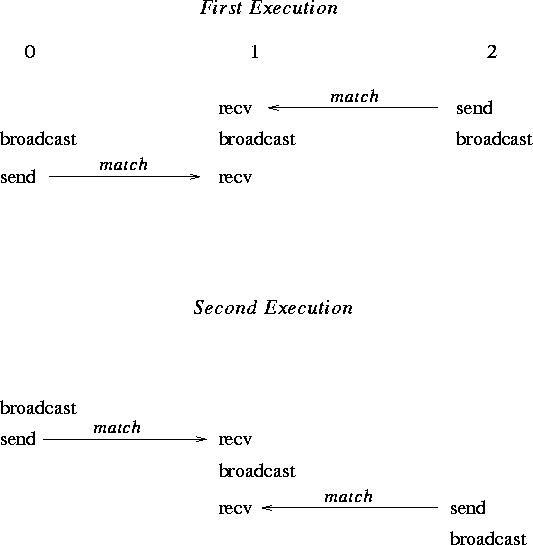

A correct, portable program must invoke collective communications so that deadlock will not occur, whether collective communications are synchronizing or not. The following examples illustrate dangerous use of collective routines.
Example
The following is erroneous.
switch(rank) {
case 0:
MPI_Bcast(buf1, count, type, 0, comm);
MPI_Bcast(buf2, count, type, 1, comm);
break;
case 1:
MPI_Bcast(buf2, count, type, 1, comm);
MPI_Bcast(buf1, count, type, 0, comm);
break;
}
We assume that the group of comm is {0,1}.
Two processes execute two broadcast operations in reverse order. If
the operation is synchronizing then a deadlock will occur.
Collective operations must be executed in the same order at all members of the communication group.
Example
The following is erroneous.
switch(rank) {
case 0:
MPI_Bcast(buf1, count, type, 0, comm0);
MPI_Bcast(buf2, count, type, 2, comm2);
break;
case 1:
MPI_Bcast(buf1, count, type, 1, comm1);
MPI_Bcast(buf2, count, type, 0, comm0);
break;
case 2:
MPI_Bcast(buf1, count, type, 2, comm2);
MPI_Bcast(buf2, count, type, 1, comm1);
break;
}
Assume that the group of
comm0 is {0,1}, of comm1 is {1, 2} and of comm2
is {2,0}. If the broadcast is a synchronizing operation, then there
is a cyclic dependency: the broadcast in comm2 completes only
after the broadcast in comm0; the broadcast in comm0
completes only after the broadcast in comm1; and the broadcast
in comm1 completes only after the broadcast in comm2.
Thus, the code will deadlock.
Collective operations must be executed in an order so that no cyclic dependences occur.
Example
The following is erroneous.
switch(rank) {
case 0:
MPI_Bcast(buf1, count, type, 0, comm);
MPI_Send(buf2, count, type, 1, tag, comm);
break;
case 1:
MPI_Recv(buf2, count, type, 0, tag, comm, status);
MPI_Bcast(buf1, count, type, 0, comm);
break;
}
Process zero executes a broadcast, followed by a blocking send operation.
Process one first executes a blocking receive that matches the send,
followed by broadcast call that matches the broadcast of process zero.
This program may deadlock. The broadcast call on process zero
may block until process one executes the matching
broadcast call, so that the
send is not executed. Process one will definitely block on the
receive and so, in this case, never executes the
broadcast.
The relative order of execution of collective operations and point-to-point operations should be such, so that even if the collective operations and the point-to-point operations are synchronizing, no deadlock will occur.
Example
A correct, but non-deterministic program.
switch(rank) {
case 0:
MPI_Bcast(buf1, count, type, 0, comm);
MPI_Send(buf2, count, type, 1, tag, comm);
break;
case 1:
MPI_Recv(buf2, count, type, MPI_ANY_SOURCE, tag, comm, status);
MPI_Bcast(buf1, count, type, 0, comm);
MPI_Recv(buf2, count, type, MPI_ANY_SOURCE, tag, comm, status);
break;
case 2:
MPI_Send(buf2, count, type, 1, tag, comm);
MPI_Bcast(buf1, count, type, 0, comm);
break;
}
All three processes participate in a broadcast. Process 0 sends a message to
process 1 after the broadcast, and process 2 sends a message
to process 1 before
the broadcast. Process 1 receives before and after the broadcast, with a
wildcard source argument.
Two possible executions of this program, with different matchings of sends and receives, are illustrated in figure 11 . Note that the second execution has the peculiar effect that a send executed after the broadcast is received at another node before the broadcast. This example illustrates the fact that one should not rely on collective communication functions to have particular synchronization effects. A program that works correctly only when the first execution occurs (only when broadcast is synchronizing) is erroneous.

Finally, in multithreaded implementations, one can have more than one, concurrently executing, collective communication call at a process. In these situations, it is the user's responsibility to ensure that the same communicator is not used concurrently by two different collective communication calls at the same process.
[] Advice
to implementors.
Assume that broadcast is implemented using point-to-point MPI communication. Suppose the following two rules are followed.
It is the implementor's responsibility to
ensure that point-to-point messages are not confused with collective
messages. One way to accomplish this is, whenever a communicator is
created, to also create a ``hidden communicator'' for collective communication.
One could achieve a similar
effect more cheaply, for example, by using a hidden
tag or context bit to indicate
whether the communicator is used for point-to-point or collective
communication.
( End of advice to implementors.)